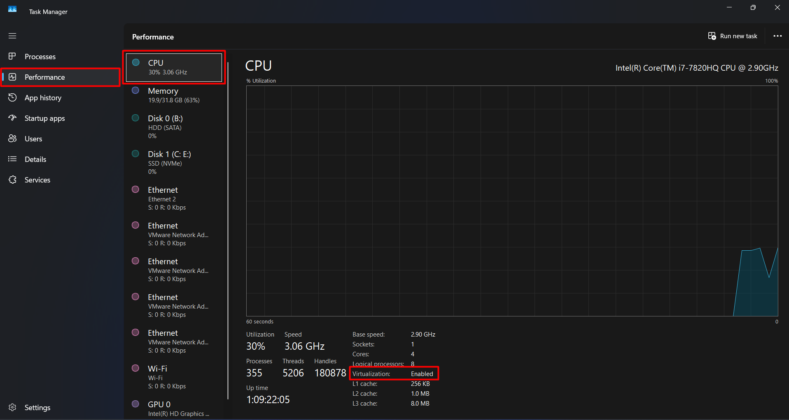
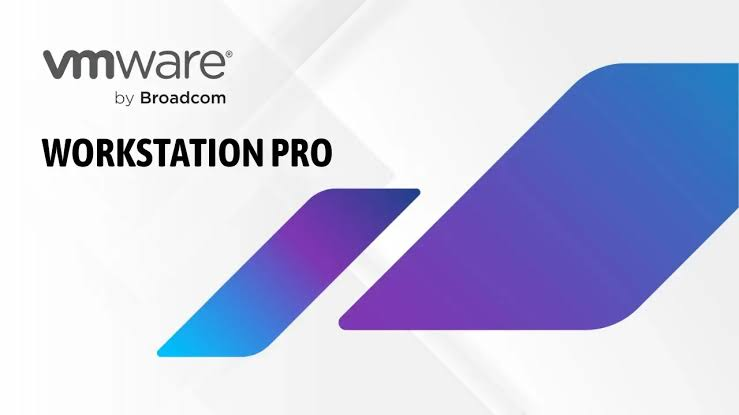
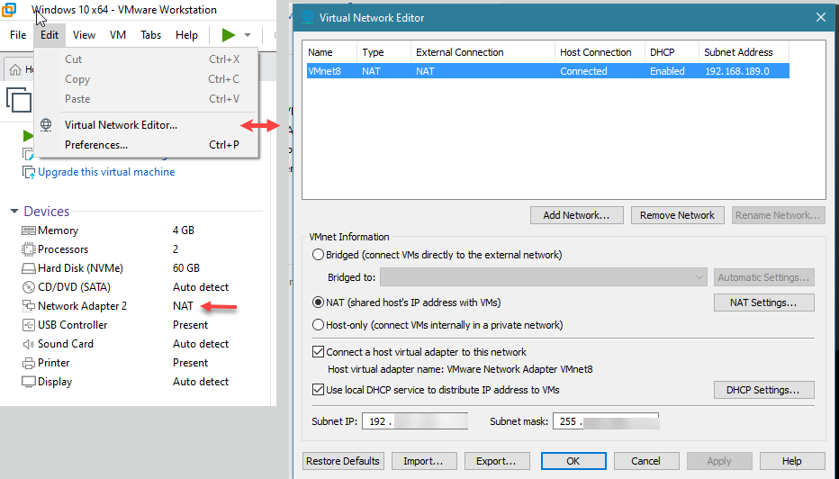
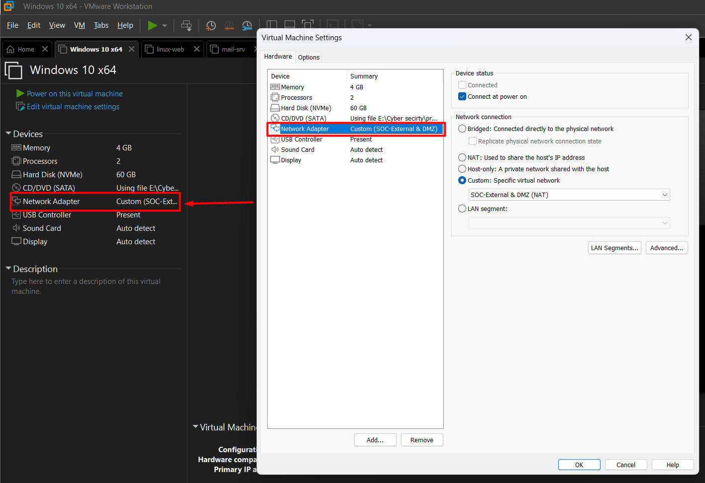
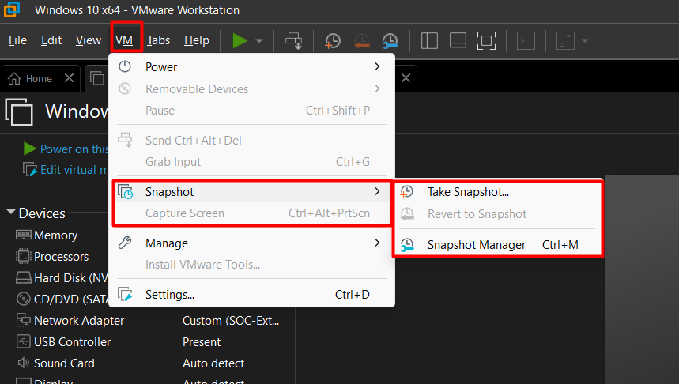
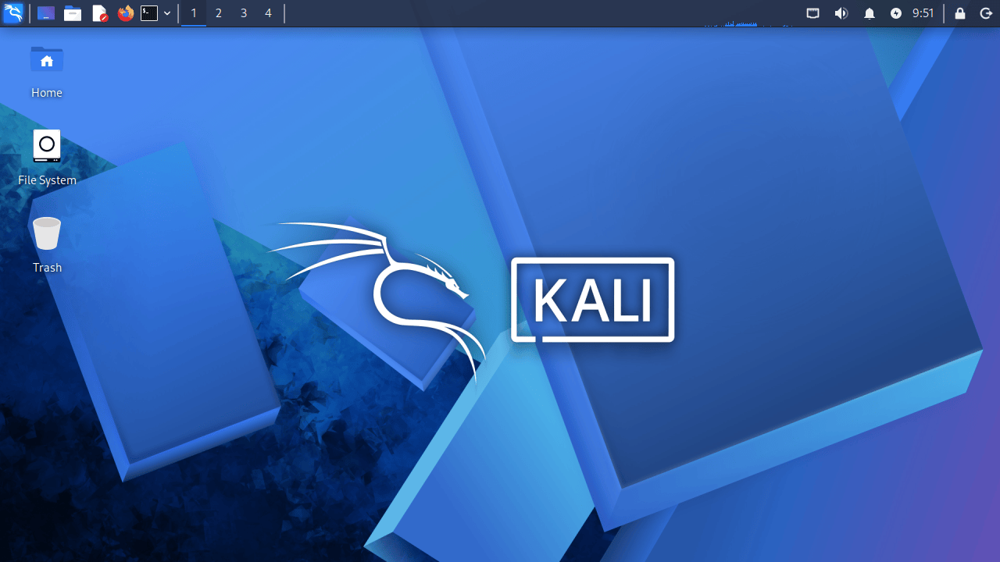
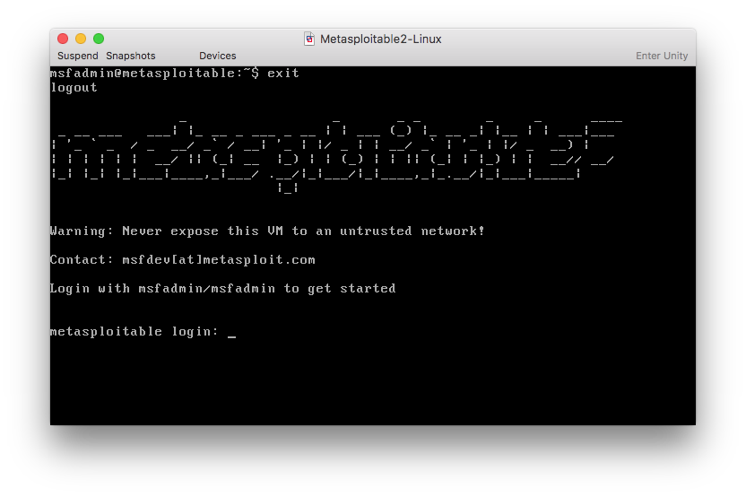

Foundations, Lab Build & First Contact
Day one of thinking like an attacker — and the day you send your first authorised packets at a live target.
Today's agenda
| Block | What we do | Format | Min |
|---|---|---|---|
| 1 | Who's in the room — me, you, and how this course runs | Ice-breaker | 15 |
| 2 | The breach nobody stopped — why any of this matters | Story | 7 |
| 3 | What you already know — networking, OS, web, identity → mapped to the attacks they enable | Recall + diagrams | 30 |
| 4 | What we're protecting — the five properties every attack breaks | Theory (interactive) | 6 |
| 5 | How an attack is built, who attacks, and the 5 phases | Theory | 30 |
| 6 | Frameworks — Kill Chain, MITRE ATT&CK, Diamond Model | Theory (diagrams) | 12 |
| 7 | Map a real breach to the frameworks | Activity (pairs) | 13 |
| 8 | Authorization, scope, RoE — and write your own | Theory + activity | 20 |
| — | Break | — | 10 |
| 9 | Virtualization — how a whole computer fits inside yours | Theory | 18 |
| 10 | Lab topology, network modes, snapshot discipline | Theory + demo | 19 |
| 11 | Passive vs active — what "first contact" means | Theory | 7 |
| 12 | First contact — host discovery, banner grabbing, OS fingerprinting | Hands-on | 30 |
| 13 | Lab report, knowledge check, your practice plan, wrap | Wrap-up | 26 |
Nothing here is taught as an isolated topic. Every idea connects to the one before it and sets up the one after. If you ever lose the thread, stop me — the thread is the lesson.
Your VMs do not need to be built yet. We cover virtualization and the lab design together this session; the actual build is tonight's homework, so today's class time goes to understanding and to your first live attack.
Who's In The Room
Before the first command, we should know each other. This matters more than it sounds.
Offensive security is taught badly when the instructor doesn't know what the room already knows. Ten minutes now saves ten hours of me explaining things you learned two courses ago — or skipping things you needed. So: who am I, who are you, and what do you already carry.
Your instructor
Ebrahim Mohamed Ahmed
SOC Analyst (Tier 1 & 2) · Detection Engineer · Cybersecurity Instructor
- My day job is the one you're training for. I run Tier 1 and Tier 2 SOC operations — 24/7 monitoring across multiple client environments, triaging alerts for SQLi, XSS, SSRF, brute-force, web shells and scanning, and deciding what's a real incident and what's noise.
- I don't just read alerts — I write the rules that raise them. Custom PCRE2 detection rules, SOAR playbooks for automated enrichment and blocking, WAF rulesets, and threat hunts. One recent hunt ran 73 IOCs across 11 categories into a full ATT&CK-mapped report for a client.
- I work both sides of the line — which is exactly why I teach this course. My background is offensive: web, infrastructure, Active Directory and wireless penetration testing. I use it to attack my own detection rules and find out where they fail. Every attack you learn here, I have run against something I was also defending.
- Teaching is the other half of what I do. I deliver SOC, incident response, digital forensics and penetration testing programmes here at ITGate and at ADA Egypt — and I build the labs myself, from the firewall and domain controller up to the attack scripts that generate the alerts.
- I'm still a student too. Currently working through INE eTHP, eCIR and eCDFP, CompTIA Security+ and Microsoft SC-300. Nobody in this field is ever finished.
Why that matters to you: this course is not theory I read in a book last week. It is what I do on Monday morning — and what I want you to be able to do by Session 10.
Now you
Around the room, thirty seconds each. Three questions only:
- Your name, and what you do right now — student, working in IT, switching careers.
- Which of the three prior courses felt strongest to you — networking, Linux, or Windows? There is no wrong answer and I am not testing you; I am building a map of the room.
- Why CEH? SOC analyst, penetration testing, curiosity, your employer sent you — all valid.
Your pair
From today you work in pairs, assigned randomly. Understand exactly what the pair is and is not:
| The pair IS | The pair is NOT |
|---|---|
| A peer-check unit — you verify each other's lab is really working | A way to split the work |
| A rubber duck — explain your problem out loud before asking me | One person typing while the other watches |
| A cross-reader — you read each other's lab report before submitting | A shared submission |
Every student builds their own VMs and personally runs every attack on their own Kali. If you watched your partner do it, you did not do it. In an interview nobody asks what your partner can do.
How this course runs
| Thing | How it works |
|---|---|
| Format | Short theory, then straight to your keyboard. No four-hour lectures. |
| Lab | You build it, on your own laptop, and it stays yours after the course. |
| Homework | A short lab report every session — what you did, what worked, what broke. |
| Assessment | A 10-question quiz each session. No midterm, no final exam. |
| Mistakes | Graded as learning. The "what went wrong" section of your report is required, not optional. |
The Breach Nobody Stopped
Every headline breach started with something somebody could have noticed.
You will spend this course learning attacks. It is easy to learn them as tricks. This story is here so that every technique you meet from now on has a place to live — a moment in a real intrusion where somebody used it, and a moment where somebody could have caught it.
A mid-size company is compromised in January. The attacker phishes one employee, cracks their VPN password, and spends six months moving quietly between servers. Customer databases are copied out through encrypted tunnels. In July, a partner company calls to say the data is for sale. That phone call is how the breach is discovered.
Here is the uncomfortable part: every single step left evidence.
| What the attacker did | What it left behind | Who could have seen it |
|---|---|---|
| Researched employees online | Nothing on the company network | Nobody — this is the point of passive recon |
| Sent the phishing email | Mail gateway log entry | Email security team |
| Brute-forced the VPN password | Hundreds of failed-login events | SOC — this is a textbook alert |
| Moved between servers | Unusual NTLM authentication patterns | SOC — lateral movement detection |
| Copied the databases out | Outbound traffic volume spike | Network monitoring |
Attacks are rarely invisible. They are usually just unwatched. Four of the five steps above were sitting in a log file that nobody read. To defend, you first have to know what the attacker does at each step — the noise it makes, the trace it leaves.
In this story, which failed first — the technology or the people?
What most people miss
Both answers are defensible, which is the point. The technology worked — it logged everything faithfully. What failed was that no human had been given the job, the training, or the tooling to read those logs and connect them. That job is the one most of you are training for.
Every phase of this attack maps to a phase of the methodology you'll learn in twenty minutes. By Session 10 you'll be able to name every technique this attacker used, the log source that recorded it, and the detection that should have fired.
What You Already Know — Networking
You learned this as an engineer. Today it becomes a map of where attacks live.
We are not re-teaching networking. Every item below you already know. What you have never done is look at the same diagram and ask "where would I attack this?" That shift — same knowledge, attacker's question — is the whole of Session 1.
The stack, re-read as a target
Name the seven OSI layers, bottom to top. Then: at which layer does a phishing email actually succeed?
Reveal
Physical, Data Link, Network, Transport, Session, Presentation, Application. Phishing succeeds at Layer 8 — the human. There is no Layer 8 in the OSI model, and that is exactly the joke: the model stops one layer short of where most breaches begin.
The handshake you'll spend Session 3 abusing
Walk me through the TCP three-way handshake. Then tell me: if I send only the first packet and never reply, what have I learned — and what has the target logged?
Reveal
SYN → SYN/ACK → ACK. If you send SYN and the target answers SYN/ACK, the port is
open — and if you then walk away instead of sending the final ACK, the
connection was never completed, so many applications never log it. That is a
SYN scan (nmap -sS), and it is the default scan in Session 3
precisely because it is quieter than a full connection.
Ports and protocols — your first target list
21 · 22 · 23 · 25 · 53 · 80 · 139/445 · 389 · 3389 — name the service for each.
Reveal, with the attacker's note
| Port | Service | Why an attacker cares |
|---|---|---|
| 21 | FTP | Often anonymous login; banner leaks exact version |
| 22 | SSH | Brute-force target; banner leaks OS and version |
| 23 | Telnet | Cleartext credentials — a gift on a sniffed network |
| 25 | SMTP | User enumeration via VRFY/EXPN; open relay abuse |
| 53 | DNS | Zone transfer can dump the entire internal name space |
| 80 / 443 | HTTP / HTTPS | The largest attack surface in the course — all of Session 8 |
| 139 / 445 | NetBIOS / SMB | Share enumeration, null sessions, and the classic Windows exploits |
| 389 | LDAP | Directory enumeration — users, groups, the whole domain structure |
| 3389 | RDP | Brute-force and credential-stuffing target on Windows |
A port number is not trivia — it is a hypothesis about what software is running. Today you will grab banners that confirm the hypothesis. In Session 4 you'll turn that confirmed version into a CVE, and in Session 5 into a shell.
If any part of the OSI walk-through or the handshake felt rusty, these rooms rebuild it hands-on before Session 3, where we scan seriously.
-
What is Networking? Free
Ground-level refresher on addressing and how devices find each other. Skip if your CCNA is fresh.
-
Intro to LAN Free
Subnetting, ARP and DHCP — the three protocols your host-only lab actually runs on. Useful if your nmap -sn sweep confuses you tonight.
-
OSI Model Premium
Walks each layer with a task per layer. Do this one if you couldn't name all seven bottom-to-top in the ask above.
-
Packets & Frames Premium
The TCP three-way handshake and TCP-vs-UDP, at packet level. This is the direct prerequisite for understanding why -sS is quieter than -sT in Session 3.
What You Already Know — Linux & Windows
You administered these systems. Now look at the same files and ask what they give away.
As an admin you learned where things are so you could configure them. As an attacker you learn where things are so you can read them when you shouldn't be able to. Same paths, different intent.
On Linux — where are user accounts stored, and where are the password hashes? Why are they in two different files?
Reveal
/etc/passwd holds accounts and is world-readable;
/etc/shadow holds the hashes and is readable only by root. They were split
precisely so that any process able to read account names could not also read hashes. Which
tells you the attacker's goal immediately: get /etc/shadow. That is Session 6.
On Windows — where do credentials actually live, and which process holds them in memory while a user is logged in?
Reveal
On disk: the SAM database for local accounts, and NTDS.dit on a domain controller for domain accounts. In memory: LSASS. This is exactly why Mimikatz reads LSASS memory rather than any file — Session 6.
| You knew it as | An attacker uses it to | Session |
|---|---|---|
| NTFS permissions & ACLs | Find files a low-privilege user can write but a service runs | S06 |
| The registry | Plant persistence in Run keys; read stored credentials | S06 · S07 |
| Services & scheduled tasks | Persist across reboots; escalate via weak service permissions | S06 |
| SAM / NTDS.dit / LSASS | Dump hashes for cracking or pass-the-hash | S04 · S06 |
| NTLM & Kerberos | Relay, poison, or crack the authentication itself | S04 |
| Event logs | Defender: detect all of the above. Attacker: clear them. | S06 · S07 |
Every row above is also a detection. Event ID 4720 fires when an account is
created; 4624/4625 track logons; Sysmon event 10 catches
process access to LSASS. Your admin knowledge is already half of a detection engineer's.
You know these systems as an admin. What you need now is speed at the command line under pressure — because from Session 3 onward every lab is timed and every command is typed, not clicked.
-
In-browser Ubuntu box — ls, cd, cat, find, grep and shell operators. Parts 2 and 3 continue into permissions and SSH. Baseline check: if this feels slow, do it before you build Kali.
-
OverTheWire — Bandit Free · no account
My recommendation over everything else on this page. 34 levels, each one a real SSH login where the password is hidden somewhere on the filesystem. It teaches exactly the skill this course needs: finding something on a box you did not configure. No signup, no VM, works from any terminal. Levels 0–15 cover everything Session 1 assumes.
-
NTFS, UAC and the Windows security model from a security angle rather than a sysadmin one. Parts 2–3 add the tooling you'll meet again in Session 6.
What You Already Know — Web & Identity
The two ideas that carry the largest attack surface in the entire course.
Session 8 is the biggest attack session in the course, and almost every attack in it is a failure of one of two things: the web server trusting input it should not have trusted, or the application confusing who you are with what you may do. Get these two ideas straight now and Session 8 becomes easy.
In an HTTP request, name three places a user can put data. Now: which of them does the server trust?
Reveal
URL path, query string, headers (including cookies), and the body — all four are user-controlled. The correct answer to the second question is none of them. Every single injection attack in Session 8 exists because a developer trusted one of these anyway.
Authentication and authorization — give me the difference in one sentence each. Then: which one fails in an IDOR vulnerability?
Reveal
Authentication proves who you are; authorization decides what you may do. In an IDOR the user is perfectly authenticated — they really are user 1001 — but the app never checks whether user 1001 may open invoice 1002. Authorization is what failed. Session 8.
Session 8 is the largest attack session in the course and it assumes you can read a raw HTTP request without thinking. These two rooms get you there — and both are free.
-
HTTP in Detail Free
Methods, status codes, headers and cookies — you build requests by hand. Do this one before Session 8, ideally in the next two weeks.
-
The longer version: web app architecture, URL anatomy, and the security headers that exist precisely because of the attacks in Session 8.
Your Knowledge, Mapped To This Course
One picture: everything you walked in with, and where each piece gets used.
That is useful information, not a problem — you now know exactly which prior-course notes to reopen before that session arrives. Note the two shakiest rows in the back of your lab report.
Ethical hacking is not a new body of knowledge. It is your existing knowledge, asked a different question: not "how do I make this work?" but "what happens if I make it work the wrong way?"
Information Security — What We're Actually Protecting
Before "how does an attack work", one question first: an attack against what, exactly?
You've just mapped your networking, OS and web knowledge onto the attack surface. Every one of those attacks damages one of exactly five properties. Security teams don't protect "the network" in the abstract — they protect these five things, and every control you'll ever deploy exists to defend one of them. Learn the five now and every attack for the rest of this course sorts itself into place.
Ransomware encrypts a hospital's patient records. Nothing is stolen, nothing is leaked — the data is still 100% private. Is this still a security failure? Which property did it break?
Reveal
Yes — and this trips people up because we default to thinking "security = secrecy". Nothing was disclosed, so confidentiality is intact. What broke is availability: authorized doctors and nurses could no longer reach data they were entitled to, when they needed it. A patient can be harmed by unavailable data exactly as badly as by leaked data.
CONFIDENTIALITY BROKEN2017 — a credit bureau's unpatched web framework let attackers read 147 million people's SSNs and addresses straight out of the database. Nothing was changed, nothing went offline — it was read by people who shouldn't have been able to. That's a pure confidentiality failure. → Session 8 (web attacks).
INTEGRITY BROKENA software update server is compromised and a backdoor is silently inserted into a legitimate update, signed and pushed to thousands of customers. Nothing was stolen from the vendor — the update itself was altered. That's integrity, and it's why code signing and hash verification exist. → Session 6 (persistence), Module 19 (supply chain).
AVAILABILITY BROKENThe ransomware-hospital example above, or simply a DDoS flood that takes a shopping site offline during a sale. The data can be perfectly intact and perfectly secret — and the failure is total, because nobody authorized can reach it. → Session 9 (DoS/DDoS).
AUTHENTICITY BROKENAn email arrives that looks exactly like it's from your CEO, asking Finance to wire funds urgently. The sender address is spoofed — the message is not genuinely from who it claims. Authentication mechanisms (SPF/DKIM/DMARC, digital signatures) exist specifically to prove authenticity. → Session 2 (social engineering setup), Session 9.
NON-REPUDIATION BROKENAn admin deletes a production database and later claims "it wasn't me — someone else must have had my password." Without signed, tamper-evident audit logs tied to that action, the organisation cannot prove who did it. Non-repudiation is why digital signatures and immutable logging matter to a SOC. → Session 7 (logging & SOC operations).
| Property | Plain English | Typical control |
|---|---|---|
| Confidentiality | Keep secrets secret | Encryption, access control, least privilege |
| Integrity | Keep data unaltered | Hashing, checksums, code signing, version control |
| Availability | Keep it reachable | Redundancy, backups, DDoS protection, patching |
| Authenticity | Prove it's genuine | Digital signatures, MFA, certificate validation |
| Non-repudiation | Prove who did it | Signed audit logs, timestamping, chain of custody |
From the next page onward, every attack you learn breaks at least one of these five. When you write a lab report or an incident summary, naming which property broke is often the single most useful sentence in it.
How An Attack Is Built
Three ingredients. Remove any one and the attack does not happen.
You've just mapped what you know onto the attack surface. The obvious next question is: what actually turns a surface into an attack? Not every weakness gets exploited, and not every motivated attacker succeeds. Three things have to line up.
A company has an unpatched server on the internet for two years and nothing happens. Then one day it's ransomwared. The server didn't change. What did?
Reveal
Something arrived that wasn't there before: either a motive (the company got big enough, or a ransomware crew started scanning that sector) or a method (a public exploit was released for that version). The vulnerability was constant. That's the formula below.
You cannot change an attacker's motive — that is outside your network. But you can remove the vulnerability (patch, harden, train) and you can detect the method (monitor, alert, hunt). Two of the three legs are yours. That is the entire business case for a SOC.
Attack classification — how the attacker reaches you
| Class | What it means | Example |
|---|---|---|
| Passive | Observe without altering anything | Sniffing traffic, OSINT collection |
| Active | Interact with and change the target | Port scanning, exploitation, defacement |
| Close-in | Physical proximity to the target | Shoulder surfing, rogue USB, evil-twin Wi-Fi |
| Insider | Carried out by someone already trusted | Disgruntled admin copying the customer database |
| Distribution | Tampering before the target ever receives it | Backdoored software update, supply-chain compromise |
Today you will perform an active attack — the target will know you were there. In Session 2 you'll do the passive version, where it cannot.
Who Attacks — And What Separates You From Them
One axis decides which side of the law you're on. It isn't skill, and it isn't intent.
In twenty minutes you will run a scan. That exact command, run against the wrong IP address, is a criminal offence in most of the world. Before you touch a keyboard you need to know precisely what makes it legal — because nothing about the command itself does.
A white hat and a black hat run the identical nmap command against
the identical server. Same tool, same flags, same result. What is different?
Reveal
One of them has a signed piece of paper. That is the entire difference. Not skill, not intent, not the tool, not whether damage occurred. The packets are identical — the authorization is not.
The full cast
| Class | Authorized? | What drives them |
|---|---|---|
| White hat | Yes — signed scope | Paid to find weaknesses before criminals do |
| Black hat | No | Money, damage, or intelligence |
| Grey hat | No | Finds bugs uninvited; may or may not disclose |
| Script kiddie | No | Runs other people's tools without understanding them |
| Hacktivist | No | Political or social cause — defacement, leaks, DDoS |
| State-sponsored | Authorized by their own government | Espionage and sabotage, with real budget and patience |
| APT | No | Advanced Persistent Threat — not a person, a pattern: quiet, long-term access to one target, often for months. Usually state-linked or well-funded organised crime; speed is never the point |
| Suicide hacker | No | Accepts getting caught; acts for the cause anyway |
| Insider | Has legitimate access, abuses it | Grievance, money, or coercion — and the hardest to detect |
"Grey hat is fine because there's no malice." It is not. No authorization means potentially illegal regardless of intent. The scanner does not know your motives — and neither does the log file that recorded you.
The Five-Phase Methodology
The attacker's roadmap — and, from today, the table of contents for this course.
You now know what an attack is made of and who carries it out. What you don't yet have is the order. Attackers do not improvise — they follow a sequence, and so does this course. From here on, every session you attend is one of these five phases.
Of the total time an attacker spends on a target, what percentage do you think goes on the actual exploit?
Reveal
Roughly five percent. Around 80% is reconnaissance and scanning — patient, quiet, mostly-legal-looking information gathering. The exploit is a brief, loud moment. This is the single most common misconception about hacking, and it has a direct defensive consequence: if your detection only fires on exploitation, you are watching the 5% and missing the 80%.
PHASE 1 · RECONNAISSANCEWho is this target?
Attacker does: WHOIS lookups, Google dorking, Shodan, certificate transparency
(crt.sh), LinkedIn employee harvesting, theHarvester,
DNS enumeration. Zero packets to the target.
SOC sees: almost nothing — this is the blind spot. Best you get is third-party threat
intel, brand-monitoring alerts, or an unusual spike in DNS queries for your domain from one
resolver.
ATT&CK: TA0043 Reconnaissance · Taught in: Session 2 (full session).
PHASE 2 · SCANNINGWhat's alive, open, and running?
Attacker does: nmap -sn host discovery, SYN/version scans,
service banner grabbing, vulnerability scanning with Nessus/OpenVAS, SMB/SNMP/LDAP enumeration.
This is what you personally do in 40 minutes on this page.
SOC sees: the classic detection — one source IP touching many ports in a short
window. Firewall connection logs, IDS port-scan signatures, and a burst of TCP RSTs
from closed ports.
ATT&CK: TA0007 Discovery · Taught in: Session 1 (intro) and Session 3 (full).
PHASE 3 · GAINING ACCESSWhich weakness actually gets me in?
Attacker does: exploits a confirmed CVE (Metasploit, searchsploit), brute-forces or
sprays credentials (Hydra), or injects into a web app (SQLi, command injection). The loud,
brief moment — roughly 5% of total attack time.
SOC sees: the richest signal of all — failed-then-successful logon sequences (Windows
4625 → 4624), EDR process-spawn alerts (w3wp.exe spawning
cmd.exe), WAF blocks, and exploit signatures on the wire.
ATT&CK: TA0001 Initial Access, TA0002 Execution · Taught in: Sessions 4, 5, 8.
PHASE 4 · MAINTAINING ACCESSHow am I still here after a reboot?
Attacker does: creates a backdoor account, installs a service or scheduled task, writes
a Run-key entry, drops a web shell, plants an SSH key, or establishes C2 beaconing. Also
escalates privilege so persistence survives.
SOC sees: new service installed (Windows 7045), new scheduled task (4698), account
created (4720), registry Run-key writes (Sysmon 13), and periodic beacon traffic with
suspiciously regular timing to a rare external domain.
ATT&CK: TA0003 Persistence, TA0004 Privilege Escalation, TA0011 C2 ·
Taught in: Sessions 6 and 7.
PHASE 5 · CLEARING TRACKSWhat did I leave behind?
Attacker does: clears event logs, wipes bash_history, alters
timestamps (timestomping), deletes tools and temp files, disables auditing or the EDR agent.
SOC sees: the absence is the evidence — event log cleared (Windows 1102), audit
policy changed (4719), a suspicious gap in log continuity, or file timestamps that don't match
the surrounding filesystem. This is why you forward logs off the host in real time
— an attacker can delete a local log, not one already sitting in your SIEM.
ATT&CK: TA0005 Defense Evasion (T1070 Indicator Removal) · Taught in: Sessions 6 and 10.
| Phase | The attacker's question | Where you learn it |
|---|---|---|
| 1 · Reconnaissance | Who is this target, and what's already public? | S02 |
| 2 · Scanning | What's alive, what ports are open, what's running? | S01 (intro) · S03 |
| 3 · Gaining Access | Which weakness actually gets me in? | S04 · S05 · S08 |
| 4 · Maintaining Access | How do I still be here after a reboot? | S06 · S07 |
| 5 · Clearing Tracks | What did I leave behind, and can I remove it? | S06 · S10 |
Every phase produces artefacts — logs, packets, file changes. Your job is to catch the attacker before phase 5, because phase 5 is where your evidence goes. The earlier you catch them, the cheaper the incident.
Three Frameworks That Describe An Attack
Same intrusion, three different lenses. Pick the one that answers your question.
The five phases are the attacker's own mental model. Frameworks are how defenders describe the same events to each other. When you write a report or sit an interview, nobody says "they were in phase three" — they say "Initial Access, T1566". These three frameworks are that language.
1 · The Cyber Kill Chain — the narrative lens
Built by Lockheed Martin. It tells the story of an intrusion in order, and its defensive value is structural: the attacker must succeed at every stage, while you only need to break one.
2 · MITRE ATT&CK — the precision lens
Where the Kill Chain gives you seven broad stages, ATT&CK gives you 14 tactics (the why) containing hundreds of techniques (the how), each with a stable ID. This is the vocabulary of real SOC reporting.

3 · The Diamond Model — the attribution lens
Every intrusion event has four features, and they are linked: an adversary uses a capability over some infrastructure against a victim. Its power is pivoting — learn one vertex and you can hunt the others.
| Framework | Answers | Use it when |
|---|---|---|
| Cyber Kill Chain | What happened, in what order? | Briefing management; deciding where to place a control |
| MITRE ATT&CK | Exactly which technique was used? | Writing detections, reports, and threat-hunting hypotheses |
| Diamond Model | Who did it, using what, against whom? | Threat intelligence and pivoting to find related activity |
Job adverts say "map findings to MITRE ATT&CK". Reports cite technique IDs. From this session onward, every attack you learn gets tagged with its tactic — by Session 10 you'll do it without thinking.
Frameworks only stick when you use them on a real intrusion. Start with MITRE's own free tooling — it costs nothing and it is what analysts actually open at work.
-
attack.mitre.org — the live matrix Free · official
Exercise (10 min, do it tonight): open technique T1046 Network Service Discovery and read its Detection section. That technique is exactly what you perform in the lab later today — so you are reading the detection guidance for your own attack.
-
ATT&CK Navigator Free · official
The colour-coded matrix tool SOC teams use to show coverage. Exercise: create a new layer and highlight the techniques from today's breach story — that is a one-page threat report, and it is a real interview answer.
-
TryHackMe — Cyber Kill Chain Premium
Walks all seven stages with a real scenario per stage. Pairs directly with the chevron diagram above.
-
TryHackMe — MITRE Premium
ATT&CK, plus CAR and D3FEND — the detection and defensive-mapping companions. The natural follow-on from the Kill Chain room.
Activity — Map A Real Breach
Take the vocabulary you just met and put it on a real intrusion.
Not memorisation — translation. Given a plain-English description of what someone did, you name the Kill Chain stage and the ATT&CK tactic. This is literally the first task of a SOC analyst writing up a case.
An attacker researches a company's employees on LinkedIn and finds the IT administrator's email address. They build a Word document containing a macro that downloads a reverse shell, and email it to the administrator as a "security audit report". The administrator opens it, the macro runs, and the attacker receives a shell on the administrator's workstation. The attacker installs a persistent backdoor as a Windows service. The backdoor connects out to an attacker-controlled server over HTTPS every thirty minutes. Over the following two weeks the attacker moves to the domain controller, dumps credentials, and exfiltrates the customer database through that same channel.
In your pair, fill this in. One of you argues for an answer, the other has to either agree or propose a better one — do not just split the rows.
| What the attacker did | Kill Chain stage | ATT&CK tactic |
|---|---|---|
| Researched employees on LinkedIn | ||
| Built a macro document with a reverse shell | ||
| Emailed it to the administrator | ||
| Administrator opened it; the macro executed | ||
| Installed a backdoor as a Windows service | ||
| Backdoor called home over HTTPS every 30 min | ||
| Moved to the DC, dumped creds, exfiltrated data |
Suggested answers
Show the mapping
| Action | Kill Chain | ATT&CK |
|---|---|---|
| LinkedIn research | Reconnaissance | Reconnaissance — T1593 Search Open Websites |
| Built the macro document | Weaponization | Resource Development — T1587 Develop Capabilities |
| Emailed the document | Delivery | Initial Access — T1566 Phishing |
| Macro executed | Exploitation | Execution — T1204 User Execution, T1059 Scripting |
| Backdoor as a service | Installation | Persistence — T1543 Create/Modify System Process |
| HTTPS callbacks | Command & Control | C2 — T1071 Application Layer Protocol |
| DC, creds, exfil | Actions on Objectives | Lateral Movement T1021 · Credential Access T1003 · Exfiltration T1041 |
The row worth arguing about is the last one — it is three tactics, not one. Real intrusions do not map one-to-one, and noticing that is the actual skill.
Pick any one row and name the log source that would have caught it. Mail gateway for the
phishing. Sysmon process-creation for the macro. Service-installation event 7045
for the backdoor. Proxy logs for the beacon. Every attack row has a detection row — that is
the entire discipline.
Authorization, Scope & Rules Of Engagement
The document that separates your career from your criminal record.
After the break we build the lab, and then you attack something. Everything up to now has been understanding. This page is the one rule, and it is not negotiable — so it goes immediately before the point where you get your hands on a tool.
The three parts of permission
| Component | What it fixes | Example from your own lab |
|---|---|---|
| Scope | What you may test — IPs, domains, applications | 192.168.56.0/24, and nothing else |
| Rules of Engagement | How you may test — techniques, timing, forbidden actions | No DoS, no attacks against the academy network, class hours only |
| Authorization | Who signed — and they must actually own the system | You own your VMs, so you are the signing authority |
"It's only a scan — scanning isn't illegal." Unauthorized scanning is reconnaissance, it is logged, and in most jurisdictions it is an offence. Authorization is not the paperwork you do afterwards. It is step zero, before any tool is launched.
Your scope for this entire course
In scope: the virtual machines you personally built, on your own host-only
network, on your own laptop. That is 192.168.56.0/24 and nothing else.
Out of scope: the academy network and its Wi-Fi. The internet. Any website, however "test-looking". Your classmate's laptop. Your employer's systems. Your own router.
The test: if you cannot point at the machine and say "I built that, it is mine, it is on my isolated network" — it is out of scope.
The legal picture
- Unauthorized access to a computer system is a criminal offence in effectively every jurisdiction — the Computer Fraud and Abuse Act in the US, the Computer Misuse Act in the UK, Law 175/2018 in Egypt.
- Intent is not a defence. "I was only testing" without a signed scope is an admission, not an excuse.
- Sector regulation stacks on top — PCI-DSS for card data, HIPAA for health data, GDPR for personal data of EU residents.
- Real engagements also carry liability clauses, insurance, and an NDA. The signed scope is one document in a stack.
Activity — write your own RoE
Individually, 10 minutes. Write a one-page rules-of-engagement document for your own class lab — something you could hand to a manager and say "this is exactly what I am permitted to do".
- Scope. The exact IP range and the exact machines that are in it.
- Out of scope. Name the specific things you will not touch. Be explicit about the academy network.
- Permitted techniques. What categories of testing you may perform.
- Prohibited actions. Denial of service, destroying data, attacking anything you did not build.
- Time window. When testing may happen.
- Authorization. Who approved it, and on what basis they had the right to.
Check three things in theirs: did they explicitly exclude the academy network? Did they define a time window? Is there a clear prohibited-actions section, or did they only write what they can do? Most first drafts miss the third.
This document is also your first piece of evidence. Keep it — every lab report in this course is written on the assumption that the work in it was authorised, and this is the page that says so.
Break
Halfway. Theory behind you — machines ahead of you.
Break Time
Press start when the break begins.
Virtualization — how an entire second computer fits inside the one in front of you — then the lab design, and then you send your first authorised packets at a live target.
Virtualization — How A Whole Computer Fits Inside Yours
Before we design the lab, understand what the lab actually is.
You are about to build four computers on one laptop, deliberately fill two of them with security holes, and attack them — safely. None of that is obvious. It works because of virtualization, and if you understand the mechanism, every lab decision in the next forty hours will make sense instead of being a recipe you follow.
You open "This PC" and see a C: drive and a D: drive — but you only bought one hard disk. What happened?
Reveal — and why it matters
Partitioning. One piece of physical hardware, presented to the operating system as two separate things. A virtual machine is the same idea, scaled up to the entire computer — one set of real hardware, presented as several complete machines. If you accept that a disk can be split, you already accept how a VM works.
What a virtual machine actually is
A virtual machine is a complete computer implemented in software. It has a CPU, RAM, a disk, and a network card — all of which are portions of your real hardware, handed out and supervised by a program called a hypervisor. The guest operating system inside has no idea; as far as Kali Linux is concerned, it is running on a real PC.
- Isolation — deliberately vulnerable machines never touch a real network.
- Snapshots — break something completely, roll back in thirty seconds.
- Cost — four machines, one laptop, no hardware budget.
- Realism — real operating systems, real network traffic, real exploits.
The two kinds of hypervisor
Step 0 — does your CPU even support this?
Virtualization needs a hardware feature: Intel VT-x or AMD-V. Without it VMs either refuse to start or run unusably slowly. It is very often disabled by default in BIOS, and this is the single most common reason a student's lab build fails.
- Open Task Manager —
Ctrl + Shift + Esc - Performance tab → CPU
- Look at the bottom right for "Virtualization"
✓ What you should see
- Virtualization: Enabled — you are ready to build tonight
- Virtualization: Disabled — reboot into BIOS/UEFI and enable Intel VT-x or AMD-V, then check again

On Windows, Hyper-V, WSL2, Docker Desktop and Credential Guard all claim the virtualization extensions and can stop VMware from working. If VMware complains that VT-x is unavailable even though Task Manager says Enabled, one of those is holding it.
Your tool: VMware Workstation
We standardise on VMware Workstation for this course. VirtualBox is a perfectly good free alternative and everything you learn transfers — but the instructions, screenshots and network names in this course are VMware's, so mixing tools will cost you time.

The hardware settings that matter
Every VM has virtual hardware you allocate from the real machine. You do not need all of it — you need these five.
| Setting | What it controls | For this course |
|---|---|---|
| Memory (RAM) | How much RAM the VM may use | Kali 4 GB (2 GB minimum). Metasploitable2 512 MB — it is from 2008. |
| Processors | CPU cores given to the VM | 2 cores for Kali, 1 for targets. Never allocate all your real cores. |
| Hard disk | The VM's virtual drive | Kali 40 GB+. Growing a disk later is easy; shrinking is painful. |
| Network adapter | How the VM reaches other machines | Host-only. The next page explains why this one is not optional. |
| USB controller | Passing physical USB devices through | Needed in Session 10 for a Wi-Fi adapter. Leave enabled. |
Your host OS still needs RAM and cores to run. If you have 8 GB total and give Kali 6 GB, both machines crawl. Rule of thumb: never hand out more than half your physical RAM across all running VMs at once — and you rarely need more than two running together.
A VM is a real operating system running on portions of real hardware, supervised by a hypervisor. That supervision is what lets you snapshot it, isolate it, and deliberately break it — which is exactly what makes a security lab possible at all.
Optional here — but if tonight's VM build is your first ever, twenty minutes on the concepts saves an hour of confused clicking.
-
Virtualization and Containers Premium
Hypervisors, VMs and how containers differ. Container knowledge becomes directly relevant in Module 19 (cloud).
-
Careers in Cyber Free
Not a technical room — a map of the roles this diploma opens up (SOC analyst, DFIR, pentester, red team). Worth 30 minutes if you're still deciding your direction.
The Lab You'll Attack From
Three network modes exist. For this course, only one of them is safe.
You now know a VM gets a virtual network adapter. The single most important decision you make tonight is what that adapter is plugged into — because one of the machines you are about to build is deliberately, catastrophically insecure.
Metasploitable2 is a Linux machine built in 2008 with unpatched services and default passwords, intentionally. What happens if it gets a public IP address?
Reveal
It is compromised — typically within minutes, by automated scanners that never sleep. And once it is, the attacker is inside your network, on your internet connection, doing things attributed to you. This is not hypothetical; it is the standard outcome.
The three network modes
Where to set it — step 1: the network itself

The example above shows a network of type NAT on a different subnet, from another lab.
That is not what you want. For this course you need a network whose
Type is Host-only, on 192.168.56.0/24, with DHCP enabled — normally
VMnet1. Select it in the list, choose
"Host-only (connect VMs internally in a private network)", set the subnet, and click
Apply. You may need Change Settings for administrator rights first.
Step 2: point each VM at that network

The screenshot has Custom: Specific virtual network pointing at another lab's NAT segment. For your CEH lab, select either Host-only, or Custom pointing at your host-only VMnet1. Do this before the first power-on of any target machine — especially Metasploitable2.
Your topology
Check the adapter setting before the first boot of Metasploitable2, not after. A vulnerable machine that briefly appeared on a real network has to be assumed compromised — you would delete it and rebuild.
Snapshot Discipline
The habit that makes breaking things free.
You will destroy machines in this course — that is the point. Snapshots are what turn "destroyed the lab, lost the evening" into "reverted, thirty seconds". Students who skip this lose a session's work at some stage. Every single time.
You exploit a target in Session 5 and leave a backdoor on it. Session 6 starts. Why is that a problem?
Reveal
Because you no longer know whether what you find in Session 6 is a real finding or the mess you made last week. Your results become unrepeatable and your lab report becomes fiction. Investigation requires a known-good starting state — the same reason a SOC images a compromised host before touching it.

After taking the snapshot, boot Kali, run touch /tmp/snapshot-test, then revert.
If the file is gone, your snapshot works. If it is still there, you reverted the wrong machine
— better to discover that now than in Session 6.
Reverting to a known-good state before investigating is exactly what incident responders do when they image a host before analysis. You are learning a real operational habit, not a lab convenience.
Passive vs Active — What "First Contact" Means
The moment your packets touch the target, you become visible. That moment is next.
Everything you do to a target falls on one side of a line: either the target can tell you were there, or it cannot. You need to know which side you are on before you press enter — because it decides whether you get caught.
I look up a company's DNS records, read their job adverts, and search their certificates on crt.sh. How many entries appear in their logs?
Reveal
Zero. You never contacted them — you asked third parties about them. That is passive reconnaissance, and it is essentially undetectable by the target. It is also Session 2, in full.
| Passive | Active | |
|---|---|---|
| Definition | Gather information without touching the target | Send packets to the target |
| Examples | OSINT, Google dorks, Shodan, WHOIS, LinkedIn | Ping sweep, port scan, banner grab, zone transfer |
| Detection risk | Effectively none | High — this is what an IDS exists to catch |
| Where you learn it | Session 2 | Today, then Session 3 |
Good attackers exhaust passive recon before making first contact. Every packet you send is a chance to be caught — so you send as few as possible, as late as possible.
You cannot detect passive recon — nothing reaches you. Your visibility begins at first contact: the first SYN, the first DNS lookup, the first connection attempt. That is precisely why IDS placement and network monitoring matter — they are your earliest possible tripwire.
First Contact
Your own keyboard, your own Kali, a live target. Your partner verifies your output.
Three questions, answered in sequence, each narrowing the last: who is alive? → what is open? → what exactly is running? That progression is the whole of reconnaissance, and everything in Session 3 is a deeper version of it.
Target: your own Metasploitable2, on your own host-only network. If your
nmap command contains any address outside 192.168.56.0/24, stop.
Pair up with someone whose lab is running and watch this block, then run every command yourself tonight after the build and record it in your report. You are not exempt — you are time-shifted.
Step 1 — where am I?
-
Confirm your own address on the host-only network.
ip aLook for an interface — usually
eth0— carrying a192.168.56.xaddress. This is your source IP: the address that will appear in every log entry you are about to generate.✓ Verification
- An interface shows an address in
192.168.56.0/24 - If it shows
10.xor172.xinstead, your adapter is on NAT — shut down, switch it to VMnet1, boot again
- An interface shows an address in
Step 2 — who else is alive?
-
Sweep the subnet for live hosts.
sudo nmap -sn 192.168.56.0/24The
-snflag means "ping scan, no port scan" — it answers only who is there. On a local subnet this is largely ARP-based, which is fast and very reliable.Note the IP address that is not your Kali and not the host adapter. That is your target. Write it down — it is
<MSF2_IP>for the rest of today.✓ Verification
- Metasploitable2 appears as "Host is up"
- Its MAC address shows a VMware vendor prefix — confirming it's a VM, not a stray real device
-
Confirm you can actually reach it.
ping -c 3 <MSF2_IP>Three replies. Note the TTL — around 64 suggests Linux, around 128 suggests Windows. Your first piece of OS fingerprinting, free, from a ping.
A -sn sweep is about as quiet as active scanning gets — no ports are touched. But
it is not silent: the ARP and ICMP traffic is still there for anyone watching the segment.
"Quieter" is never "invisible".
Step 3 — what is open, and what is running?
-
Scan the most common ports, with version detection.
nmap -sV --top-ports 20 <MSF2_IP>-sVdoes not just report "port 21 is open" — it talks to the service and reports what it claims to be. Expect something close to:PORT STATE SERVICE VERSION 21/tcp open ftp vsftpd 2.3.4 22/tcp open ssh OpenSSH 4.7p1 Debian 8ubuntu1 23/tcp open telnet Linux telnetd 25/tcp open smtp Postfix smtpd 80/tcp open http Apache httpd 2.2.8 ((Ubuntu) DAV/2) 139/tcp open netbios-ssn Samba smbd 3.X - 4.X 445/tcp open netbios-ssn Samba smbd 3.X - 4.X✓ Verification
- At least five open ports returned
- Each has a version string, not just a service name
Step 4 — banner grabbing by hand
Nmap did this for you. Now do it yourself, so you understand what it actually did — connect directly to a service and read what it volunteers.
-
Connect to three services with netcat and record what each says.
# FTP nc -nv <MSF2_IP> 21 # SSH nc -nv <MSF2_IP> 22 # SMTP nc -nv <MSF2_IP> 25Expect banners along these lines:
220 (vsFTPd 2.3.4) SSH-2.0-OpenSSH_4.7p1 Debian-8ubuntu1 220 metasploitable.localdomain ESMTP Postfix (Ubuntu)Press
Ctrl+Cto close each connection. Copy all three banners verbatim into your lab report — retyping introduces errors, and the exact version string is the whole value.✓ Success criteria for this block
nmap -snfound Metasploitable2pingreturned 3 of 3 repliesnmap -sVreturned at least 5 ports with versionsncreturned at least 3 raw banners, pasted into your report- Your partner has looked at your terminal and confirmed the above
A banner gives you two things: the service and its exact version.
Take vsftpd 2.3.4 — that specific version shipped with a backdoor. In Session 4
you will look that up as a CVE, and in Session 5 you will use it to get a shell.
Today's output is Session 5's input.
Everything you just ran generated log entries on that target: connection attempts on ports you touched, TCP resets on ports you didn't, and three completed sessions from netcat. If you were the analyst, the signal is one source IP touching many ports in a short window — that pattern is the classic port-scan detection, and you just generated a textbook example of it. Same packets, both sides.
Step 5 — stretch goal, if you finish early
Two commands that take the same target further. Both are optional today and both are Session 3 material — but if your pair is done and waiting, run them and paste the output.
-
Fingerprint the operating system, not just the services.
sudo nmap -O <MSF2_IP>Nmap compares subtle TCP/IP stack behaviours against a signature database and guesses the OS. Compare its answer with the TTL you observed in the ping — they should agree. When they disagree, something between you and the target is rewriting packets.
-
Ask Nmap's script engine what it knows about the target.
nmap -sV --script=default <MSF2_IP>The default script set runs safe enumeration scripts against every open port — anonymous FTP checks, SMB OS discovery, HTTP title grabbing. This is where reconnaissance starts turning into a vulnerability list. Read the output carefully — Metasploitable2 will tell you things that should alarm you.
You just performed T1046 Network Service Discovery for the first time. It is the single most-repeated skill in this entire diploma — every session from 3 onward starts with a scan. These build it into muscle memory before Session 3.
-
The reward room. Scan a Windows box, find MS17-010 (EternalBlue), exploit it, and get SYSTEM. It runs the exact recon-to-shell arc this course spends Sessions 1 through 5 building — do it once now for motivation, then again in Session 5 and understand every step. Warning: it will feel like magic today. That feeling is the point.
-
Nmap Live Host Discovery Premium
Everything -sn does under the hood — ARP, ICMP, TCP and UDP discovery, and when each one lies to you.
-
Nmap Basic Port Scans Premium
TCP connect vs SYN scan, UDP scanning, and reading scan output properly. The direct prerequisite for Session 3. Followed by Nmap Advanced Port Scans for the FIN/XMAS/NULL evasion scans.
Rooms on TryHackMe and Hack The Box give you a target machine and written permission to attack it — that is the entire reason they exist, and it is the same authorization principle from earlier today. Never point a tool you learned here at anything that isn't your own lab or an explicitly-provided training target. Same commands, different legal outcome.
How To Write The Lab Report
Every session ends with one. Here's the format, once, for the whole course.
Two reasons, and neither is bureaucracy. First: writing down what you did is how you find out whether you understood it. Second: reporting is the job — a penetration test that isn't written up delivered nothing, and a SOC investigation that isn't documented never happened.
| Section | What goes in it |
|---|---|
| Objective | One sentence — what were you trying to prove you could do? |
| Environment | Table: VM name, OS, IP, role. Anyone should be able to rebuild your setup from it. |
| Steps & commands | Every command with its real output. Paste, don't retype. |
| Evidence | Terminal output or screenshots that prove the result — not a claim that it worked. |
| What went wrong | Required. At least one thing that failed first time, and how you fixed it. |
| What I learned | One paragraph in your own words. |
| SOC angle | One sentence — as an analyst, what would you look for to detect what you just did? |
An empty "what went wrong" section reads as either you didn't try anything hard, or you're hiding something. Reports are graded pass / needs-review — a documented failure you diagnosed is worth more than a clean run you can't explain.
You already have the material: your ip a output, the nmap -sn sweep,
the -sV results and three raw banners. Open the template and paste them in
before the terminal scrollback is gone.
Knowledge Check
Ten questions. Click an answer to see whether you were right and why.
Q1 An attack is best described as the combination of which three elements?
- Tool + target + time
- Motive + method + vulnerability
- Exploit + payload + shell
- Recon + scanning + access
Q2 Put the five hacking phases in the correct order.
- Scanning → Recon → Access → Clearing Tracks → Maintaining Access
- Recon → Scanning → Gaining Access → Maintaining Access → Clearing Tracks
- Recon → Gaining Access → Scanning → Clearing Tracks → Maintaining Access
- Scanning → Gaining Access → Recon → Maintaining Access → Clearing Tracks
Q3 A white hat and a black hat run the identical nmap scan. What is the only thing that differs?
- The tool version
- The time of day
- Written authorization and scope
- Whether the scan succeeds
Q4 In the Cyber Kill Chain, emailing a malicious attachment to a victim is which stage?
- Reconnaissance
- Weaponization
- Delivery
- Actions on Objectives
Q5 What distinguishes a Type 1 hypervisor from a Type 2?
- Type 1 only runs Linux guests
- Type 1 runs directly on the hardware; Type 2 runs on top of a host OS
- Type 1 cannot take snapshots
- Type 1 is free, Type 2 is commercial
Q6 Why must the lab VMs sit on a host-only network?
- It is faster than NAT
- Kali requires it
- To isolate deliberately vulnerable targets from the real network and internet
- To give the targets internet access
Q7 Which of these is out of scope for this course?
- Scanning your own Metasploitable2 VM
- Grabbing banners inside your own host-only lab
- Scanning the academy's production Wi-Fi
- Reverting your target to a baseline snapshot
Q8 Which command performs host discovery across a subnet without a port scan?
nmap -sV <ip>nmap -sn <cidr>nc -nv <ip> 21ping -c 3 <ip>
Q9 Roughly how many entries does passive reconnaissance create in the target's logs?
- None — the target is never contacted
- One per query
- The same as an nmap scan
- It depends on the firewall
Q10 You run nc -nv <ip> 21 and see 220 (vsFTPd 2.3.4). Why does this matter?
- It proves the host is Linux
- It shows the firewall is misconfigured
- It confirms you have authorization
- The exact version can be matched to a known CVE and exploit
Short answer — discuss, don't click
S1 An attacker creates a new local administrator account for persistence. Name the ATT&CK tactic, and one log source that would catch it.
Show answer
Persistence. Detect via Windows Security event 4720 (account
created) — or 4732 if they added it to the Administrators group — plus EDR
telemetry. You met this file and this tactic in the Windows recall block.
S2 You're about to start an attack lab on Metasploitable2. What is the first thing you do, and why?
Show answer
Revert to the baseline-clean snapshot. Without a known-good starting state you
cannot tell your findings apart from last week's damage — your results stop being repeatable
and your report stops being true.
Your Practice Plan Between Sessions
Four hours a week, on your own machine, in the right order. This is what separates the students who finish strong.
Forty hours of class time is not enough to build reflexes — it is enough to build understanding. The reflexes come from repetition on your own time. Everything below is optional, and every student who has done it has visibly outperformed the ones who didn't. Nothing here is graded; all of it is on the interview.
The order that actually works
| When | Do this | Why then | Cost |
|---|---|---|---|
| Tonight | Build your VMs (homework) — nothing else | Every other item needs a working lab. Don't split your attention. | Free |
| This week | OverTheWire Bandit, levels 0–15 | Builds Linux command-line speed — the one skill used in literally every remaining session. | Free, no account |
| This week | Read ATT&CK T1046 — detection section | 10 minutes. It's the detection guidance for the attack you ran today. | Free |
| Before S02 | HTTP in Detail | Recon in Session 2 leans on reading HTTP responses fluently. | Free |
| Before S03 | Nmap module — Live Host Discovery + Basic Port Scans | Session 3 goes fast and assumes today's scanning is comfortable. | Premium |
| Any time | TryHackMe: Blue | Your first end-to-end compromise. Motivation fuel — do it when class feels theoretical. | Free |
| Before S08 | Web Application Basics | Session 8 is the biggest attack session in the diploma. Arrive ready. | Free |
Which platform, and do you need to pay?
| Platform | What it's best at | Free tier reality |
|---|---|---|
| TryHackMe | Guided, structured rooms with in-browser machines. The gentlest on-ramp and the closest match to this course's sequence. | 650+ genuinely free rooms and a limited daily browser-VM allowance. Most rooms inside structured learning paths need Premium. Free is enough to follow this course; Premium is worth it if you want the full Nmap module. |
| OverTheWire | Raw Linux and command-line skill, delivered as a puzzle ladder. No hand-holding. | Entirely free, no account. Best value on this whole page. |
| Hack The Box | Realistic unguided machines. Harder, closer to a real engagement, less structured. | Free tier includes Starting Point Tier 0 and rotating active machines. Come back to this from Session 5 — before that it will mostly frustrate you. |
| picoCTF | CTF-style challenges (crypto, forensics, web, reversing) with a permanent practice gym. | Free. Good for the forensics and crypto side, which this diploma touches lightly. Optional. |
Bandit, levels 0–15. It costs nothing, needs no account, no VM and no subscription — just SSH from any terminal. It builds the exact skill every later session assumes and most students are weakest at: finding something on a machine you did not set up.
These platforms hand you a target and the authorization to attack it. That authorization does not travel. The moment you point the same command at a system nobody gave you in writing, you are on the wrong side of the line we drew this morning — and the tooling looks identical in the logs either way.
Finished a room and something didn't make sense? Bring it to the next session. Ten minutes on a real question from a real box beats an hour of slides — and someone else in the room almost certainly hit the same wall.
Takeaways & Homework
What to keep from today, and what has to be done before Session 2.
The eight things worth keeping
- Everything you already knew — OSI, TCP, Linux paths, Windows internals, HTTP — is the attack surface. Same knowledge, different question.
- Attack = Motive + Method + Vulnerability. Two of those three are the defender's to remove.
- The five phases are a loop, and roughly 80% of attacker time is phases 1–2. Detection that only watches exploitation watches the wrong 5%.
- The Kill Chain is a defender's advantage: the attacker must clear every stage, you only need to break one.
- ATT&CK is the industry's shared language. Tactic = why, technique = how, and both have IDs you can cite.
- Authorization is the only legal difference between what you do and what a criminal does — and it is step zero, not paperwork.
- Host-only networking is a safety control. Snapshots make breaking things free.
- A banner gives you service and exact version — the input to vulnerability analysis in Session 4.
Homework — due before Session 2
| # | Task | What you submit |
|---|---|---|
| 1 | Check virtualization support — Task Manager → Performance → CPU. If disabled, enable Intel VT-x / AMD-V in BIOS. Do this first; everything else depends on it. | Screenshot showing "Virtualization: Enabled" |
| 2 | Build KALI-ATK01 and METASPLOITABLE2 on VMnet1 host-only, following labs/setup_guide.md. Verify the adapter before first power-on. |
Screenshot of both VMs running, and ip a from each |
| 3 | Take baseline-clean snapshots on both machines while powered off, then prove the revert works with the /tmp/snapshot-test check. |
Screenshot of Snapshot Manager on both VMs |
| 4 | Run first contact yourself — the full Step 1–4 sequence from today against your own Metasploitable2. | Pasted terminal output, including 3 raw banners |
| 5 | Build WIN10-TGT01 and WINSRV19-TGT01 on the same host-only network with baseline snapshots. Needed from Session 3 — start now, they take time. | Screenshot of both VMs on VMnet1 |
| 6 | Write the lab report using the template — every section filled, including "what went wrong" and the SOC angle. | Completed lab report (Markdown or PDF) |
What "done" looks like


If virtualization is disabled and your BIOS is locked by an employer's policy, you need to know now — not the evening before Session 3. Tell me immediately if you hit this and we will sort out an alternative.
Pass / needs-review. Four criteria: every section filled; real commands with real pasted output; an honest "what went wrong"; and a SOC angle showing you thought about detection. Mistakes cost nothing. Blank sections do.
Next session
Today you crossed into active. Next session we go back over the line and stay there: Google dorks, Shodan, WHOIS, certificate transparency, theHarvester, DNS recon and subdomain discovery — building a complete picture of a target that never learns you were looking. Everything phase 1 of the methodology promised.
Navigate with ← → arrow keys · Home / End to jump